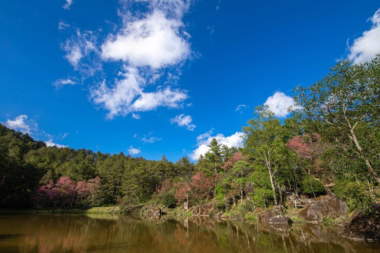

Bonito

Famoso por suas águas cristalinas e atividades de ecoturismo.
Pontos Turísticos
- Gruta do Lago Azul
- Rio da Prata
- Projeto Jibóia
Cuidados a Serem Tomados
- Respeite a natureza e siga as instruções dos guias.
- Utilize protetor solar biodegradável.